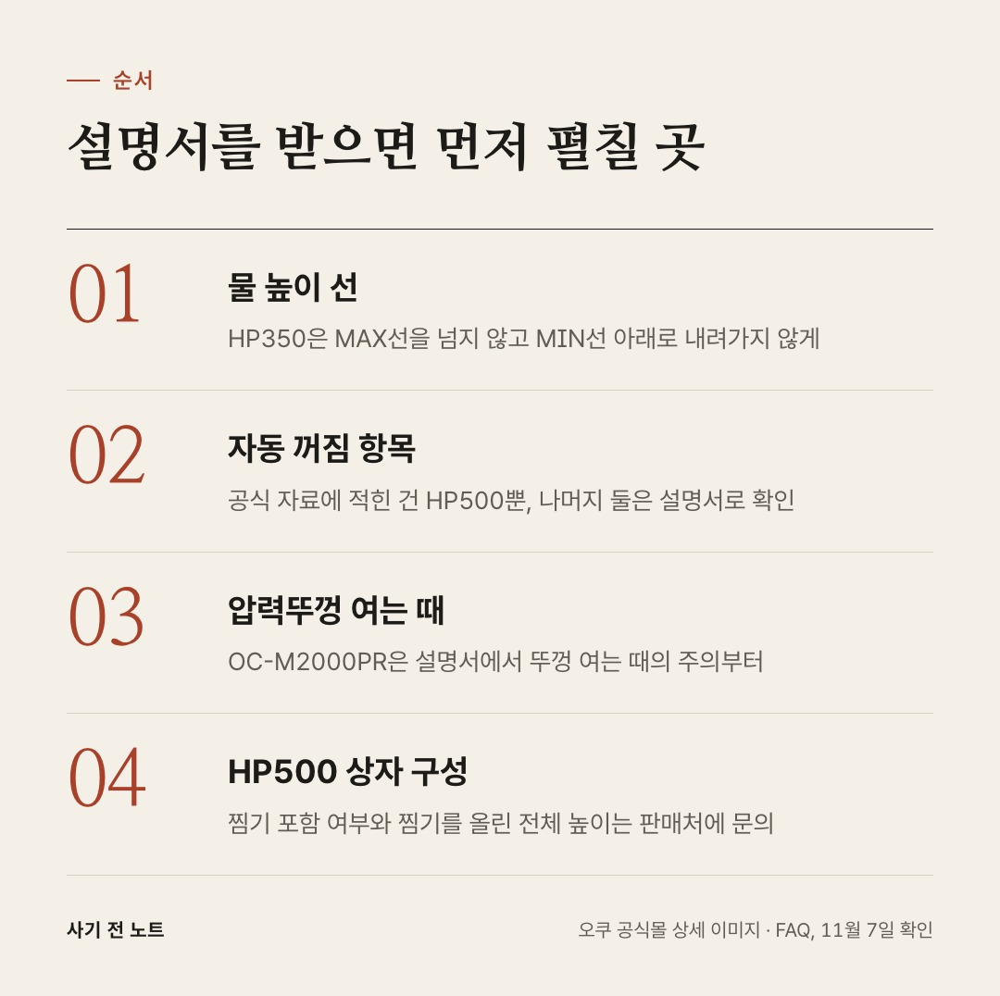

이 포스팅은 네이버 쇼핑 커넥트 활동의 일환으로, 판매 발생 시 수수료를 제공받습니다.
가정용 약탕기 몇 리터? 물 3.2L를 넘기면 오쿠 HP500 하나
약재 한 봉지에 물을 4L 가까이 붓는 집이라면 고민할 게 별로 없습니다. 오쿠 약탕기 세 모델 가운데 그 물이 다 들어가는 건 HP500 하나뿐이거든요. 유리 탕기 HP350은 3L, 도자기 OC-M2000PR은 3.2L에서 멈추지만 HP500은 권장 4L·최대 5L. 두 번 나눠 달일 일이 없어집니다.
▶ 물 3.5~4L를 한 번에 달일 집, 오쿠 대용량 한방 멀티쿠커 OCC-HP500(11월 8일 네이버 쇼핑 표시가 126,380원): https://naver.me/GjyEMHgO

HP500 자체 건강메뉴 표부터 재료 35g에 물 3.5L가 기준이에요. 제조사가 잡아 둔 한 번의 양이 나머지 두 모델의 솥을 넘칩니다.
HP500으로 가면 놓는 것
보온 버튼이 따로 없어요. 공식몰 FAQ는 온도조리(50~95도)로 온도와 시간을 맞춰 보온하라고 하고, 메뉴마다 정해진 시간이 지나면 꺼진다고 적었습니다.
찜기는 상자를 열어 봐야 압니다. 상품명엔 '찜기 포함'이 붙는데 구성품 표에는 냄비·본체·삼베 주머니·설명서뿐이라, 꼭 필요하면 주문 전에 판매처에 물어보세요. 전력은 셋 중 가장 큰 1600W.

HP350보다 27,740원 더 내고(11월 8일 네이버 쇼핑 표시가 기준) 물을 1~2L 더 받는 셈이에요. 그 값에 재탕 버튼과 48시간 보온은 빠져 있고요.
3.2L 안쪽이면, 유리냐 도자기냐
달이는 색을 눈으로 보고 싶다면 HP350. 내열유리 탕기 3L에, 공식 자료에서 '재탕' 메뉴를 찾은 건 셋 중 이 모델뿐이었고 보온은 최대 48시간이에요. 다만 유리면의 기포·미세 스크래치는 제조 과정 현상이라 그 이유로는 교환·반품이 안 된다는 안내가 있습니다.
도자기 내솥에 중탕으로 달이고 싶다면 OC-M2000PR. 경남 합천에서 만든 도자기 내솥에 압력뚜껑을 닫는 방식이고 정격 800W로 셋 중 가장 낮아요. 대신 자리를 가장 넓게 차지하고, 11월 7일 다른 판매처 표시값이 382,000원으로 나머지 둘의 세 배가 넘습니다.
켜 두고 자리를 비운다면
자동으로 꺼진다고 공식 자료에 적힌 건 HP500뿐이었어요. 나머지 둘은 받은 설명서에서 물 높이(MAX·MIN선)와 꺼짐 항목부터 펼쳐 보세요.

세 모델 모두 11월 7일 제품안전정보센터 조회에서 KC 인증 '적합'이었어요. 직접 써 본 건 아니고, 숫자는 오쿠 공식몰 상세(11월 7일 확인)에서 가져왔어요. 솥에 붓는 물이 3.5L면 HP500, 3L 안쪽에서 재탕과 48시간 보온이 필요하면 HP350, 도자기 중탕이면 OC-M2000PR.
이 글이 기댄 자료
- 오쿠 대용량 한방 멀티쿠커 OCC-HP500 공식몰: https://www.ocoo.co.kr/product/detail.html?product_no=301
- 오쿠 건강드림 약재탕기 OCC-HP350 공식몰: https://www.ocoo.co.kr/product/detail.html?product_no=377
- 오쿠 슬림 마스터쿠커 OC-M2000PR 공식몰: https://www.ocoo.co.kr/product/detail.html?product_no=23
- 제품안전정보센터 인증정보 검색: https://www.safetykorea.kr/release/certificationsearch
#가정용약탕기 #전기약탕기 #약탕기 #오쿠약탕기 #유리약탕기